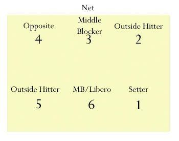

You need to know how to pass effectively, because you need a solid defense to get a good hit in. Even if you're the tallest person on the team, you still have to know how to dive and hit the ground. doing proper dives takes a lot of practice, so you should start by bending from side to side as seen in the picture above. Make sure that you’re not swinging at it, but that your legs unbend as you pass, thereby pushing your platform up as well. This will make it much more controlled and easier for the setter. If you feel that you want to start diving, take it slowly. I won’t detail it all here, so it would be a good idea to ask your coach for drills. To start, you have to stand with one foot slightly in front of the other. The foot will vary depending on whether you’re diving to the left, right, or forward (left foot in front if you’re diving left, right foot in front if you’re diving right, and if you’re diving forward you should use the foot corresponding with your dominant hand). Push off of the foot, fall forward, extend your arms or arm, depending on how far you need to reach, and do the best you can not to fall on your arms. If you do, you’ll be sorry, or at least the proud owner of nasty floor burns or even a broken wrist.
Serving is the only moment when all the pressure is on you. If you can't serve powerfully, you at least need to be consistent. To have a good serve, you need a good stance. If you’re not doing a jump serve, be closer to the line, as all you need to do is transfer weight from your back foot to your front when you step with it. However, if you’re going for a harder serve, you should probably stand back some to avoid the ball leaving the court. At the highschool level, it’s expected that your serve will be difficult to receive, so you may want to try a jump serve, or even a jump floater. To make it float, you need to stop your hand before you swing through, but keep it stiff the whole time. For more information about how to do each type of jump serve, this site has very nice gifs and general tips on how your form should look.
By the time you get to high school you should know which position you’re most comfortable with, but it’s not a bad idea to try others. For example, if you’ve mostly been hitting on the outside, you could also try the right side, as it’s mostly the same approach and you have the same amount of space to do cross attacks. Middles should make it a point to work on passing, as many middles I’ve worked with are hesitant to hit the floor. If you’re not sure what you like most, try everything, even setting. Coaches always like to see that a player has a diverse skill set.
